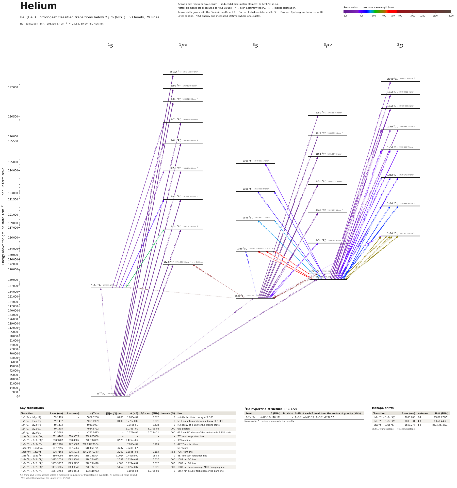

Helium energy level diagram
Energy levels and transitions of neutral helium (He I): the 79 strongest classified lines below 2 µm from the NIST Atomic Spectra Database and the 53 levels they connect, each line with its vacuum wavelength, frequency and, for 73 of them, the reduced dipole matrix element derived from the NIST transition rate. Measured lifetimes, transition rates, hyperfine constants and isotope shifts from the literature are included, each with its citation.
Hover a line or a level to isolate it, click to keep it selected. Scroll to zoom, drag to move.

Download: diagram (PDF) diagram (SVG) transitions (CSV) levels (CSV) source code

Key transitions of helium
| Transition | λ vac (nm) | λ air (nm) | ν (THz) | |⟨J‖er‖J′⟩| (ea₀) | A (s⁻¹) | Γ/2π up. (MHz) | branch (%) | Use |
|---|---|---|---|---|---|---|---|---|
| 1s2 1S0 – 1s2p 3P°0 | 59.1409 | – | 5069.1256 | 0.000 | 1.000e-02 | 1.626 | 9.79e-08 | strictly forbidden decay of 2 3P0 |
| 1s2 1S0 – 1s2p 3P°1 | 59.1412 | – | 5069.0959 | 0.000 | 1.770e+02 | 1.626 | 0.00173 | 59.1 nm intercombination decay of 2 3P1 |
| 1s2 1S0 – 1s2p 3P°2 | 59.1412 | – | 5069.0937 | – | 3.240e-01 | 1.626 | 3.17e-06 | M2 decay of 2 3P2 to the ground state |
| 1s2 1S0 – 1s2s 1S0 | 60.1405 | – | 4984.8722 | – | 5.076e+01 | 8.079e-06 | 100 | two-photon |
| 1s2 1S0 – 1s2s 3S1 | 62.5563 | – | 4792.3615 | – | 1.271e-04 | 2.022e-11 | 100 | 62.6 nm M1 decay of the metastable 2 3S1 state |
| 1s2s 3S1 – 1s3d 3D1 | 381.0160 | 380.9078 | 786.823850 | – | – | – | – | 762 nm two-photon line |
| 1s2s 3S1 – 1s3p 3P°0 | 388.9707 | 388.8605 | 770.732839 | 0.525 | 9.475e+06 | – | – | 389 nm line |
| 1s2s 3S1 – 1s3s 3S1 | 427.7010 | 427.5807 | 700.939271(5) | – | 7.000e-09 | 3.183 | 3.5e-14 | 427.7 nm forbidden |
| 1s2p 3P°0 – 1s3d 3D1 | 587.7595 | 587.5966 | 510.059755 | 3.437 | 3.928e+07 | – | – | 587.6 nm |
| 1s2p 3P°1 – 1s3s 3S1 | 706.7163 | 706.5215 | 424.204793(5) | 2.203 | 9.284e+06 | 3.183 | 46.4 | 706.7 nm line |
| 1s2s 3S1 – 1s2p 1P°1 | 886.6095 | 886.3661 | 338.133594 | 0.001* | 1.442e+00 | 288.8 | 7.95e-08 | 887 nm spin-forbidden line |
| 1s2s 3S1 – 1s2p 3P°0 | 1083.2058 | 1082.9091 | 276.764095 | 2.531 | 1.022e+07 | 1.626 | 100 | 1083 nm D0 line |
| 1s2s 3S1 – 1s2p 3P°1 | 1083.3217 | 1083.0250 | 276.734478 | 4.385 | 1.022e+07 | 1.626 | 100 | 1083 nm D1 line |
| 1s2s 3S1 – 1s2p 3P°2 | 1083.3306 | 1083.0340 | 276.732187 | 5.662 | 1.022e+07 | 1.626 | 100 | 1083 nm laser-cooling / MOT / imaging line |
| 1s2s 3S1 – 1s2s 1S0 | 1557.2768 | 1556.8514 | 192.510702 | – | 9.100e-08 | 8.079e-06 | 1.79e-07 | 1557 nm doubly-forbidden ortho-para line |
λ, ν from NIST level energies unless a measured frequency for this isotope is available. A: measured value or NIST. Γ/2π: natural linewidth of the upper level, 1/(2πτ).
3He hyperfine structure (I = 1/2)
| Level | A (MHz) | B (MHz) | Shift of each F level from the centre of gravity (MHz) |
|---|---|---|---|
| 1s2s 3S1 | -4493.134118(11) | – | F=1/2: +4493.13 F=3/2: -2246.57 |
Measured A, B constants; sources in the data file.
Isotope shifts
| Transition | λ vac (nm) | Isotopes | Shift (MHz) |
|---|---|---|---|
| 1s2s 3S1 – 1s2p 3P°0 | 1083.206 | 3-4 | 33668.074(5) |
| 1s2s 3S1 – 1s2p 3P°2 | 1083.331 | 4-3 | 33668.445(3) |
| 1s2s 3S1 – 1s2s 1S0 | 1557.277 | 4-3 | 8034.3672(23) |
Shift = ν(first isotope) − ν(second isotope).
Closed and nearly closed transitions of helium
| Transition | λ vacuum (nm) | Lower level | A (s⁻¹) | Leak per scattered photon | Photons before a leak | Where the leak goes |
|---|---|---|---|---|---|---|
| 1s2 1S0 → 1s2p 1P°1 | 58.4334 | ground | 1.799e+09 NIST | ≥ 7.95 × 10−10 from theory | ≤ 1.26 × 109 | 1s2s 3S1 7.95 × 10−10* (long-lived); 1 more possible path without a listed rate |
| 1s2s 3S1 → 1s2p 3P°0 | 1083.2058 | metastable | 1.022e+07 NIST | 9.79 × 10−10 from measured data | 1.02 × 109 | 1s2 1S0 9.79 × 10−10 (long-lived) |
| 1s2s 3S1 → 1s3p 3P°2 | 388.9751 | metastable | 9.475e+06 NIST | ≥ 1.28 × 10−8 from NIST data | ≤ 7.81 × 107 | 1s2 1S0 1.28 × 10−8 (long-lived); 1 more possible path without a listed rate |
| 1s2s 3S1 → 1s2p 3P°2 | 1083.3306 | metastable | 1.022e+07 NIST | 3.17 × 10−8 from measured data | 3.15 × 107 | 1s2 1S0 3.17 × 10−8 (long-lived) |
| 1s2s 3S1 → 1s2p 3P°1 | 1083.3217 | metastable | 1.022e+07 NIST | ≥ 1.73 × 10−5 from measured data | ≤ 57,800 | 1s2 1S0 1.73 × 10−5 (long-lived); 1 more possible path without a listed rate |
A transition is closed when its upper level can decay only to the level it was excited from, so the atom keeps scattering photons. “closed”: among the levels NIST lists, no other level below the upper level has the opposite parity and |ΔJ| ≤ 1, so no other electric-dipole decay exists. Otherwise the leak is the sum of the branching ratios of the other decay lines of the upper level (or 1 − branching ratio where that of the line itself has been measured), and the number of photons is 1 / leak. “≥” and “≤”: at least one possible decay path has no listed rate, so the leak is a lower limit. These numbers are derived from the branching ratios, lifetimes and rates of this page, not measured as such; the tag names the weakest of the inputs, * marks theory and ≈ a model or semi-empirical calculation. Listed: lines that start on the ground level or on a metastable level and leak at most 10 %, unless more than three possible decay paths have no listed rate. Fine-structure levels only: hyperfine and Zeeman dark states and forbidden decays without a listed rate are not considered. Select a line in the diagram for the full list of its leak channels.
Listed He transitions below 2 µm
| Lower level | Upper level | λ vacuum (nm) | λ air (nm) | ν (THz) | Type | |⟨J‖er‖J′⟩| (ea₀) | A (s⁻¹) | Branching (%) | Source of matrix element / A |
|---|---|---|---|---|---|---|---|---|---|
| 1s2 1S0 | 1s10p 1P°1 | 50.7058 | – | 5912.3895 | E1 | 0.0554 NIST | 1.593e+07 NIST | – | NIST ASD (accuracy AAA) |
| 1s2 1S0 | 1s9p 1P°1 | 50.7718 | – | 5904.7030 | E1 | 0.065 NIST | 2.183e+07 NIST | – | NIST ASD (accuracy AAA) |
| 1s2 1S0 | 1s8p 1P°1 | 50.8643 | – | 5893.9616 | E1 | 0.0778 NIST | 3.103e+07 NIST | – | NIST ASD (accuracy AAA) |
| 1s2 1S0 | 1s7p 1P°1 | 50.9998 | – | 5878.3031 | E1 | 0.0953 NIST | 4.622e+07 NIST | – | NIST ASD (accuracy AAA) |
| 1s2 1S0 | 1s6p 1P°1 | 51.2099 | – | 5854.1944 | E1 | 0.121 NIST | 7.317e+07 NIST | – | NIST ASD (accuracy AAA) |
| 1s2 1S0 | 1s5p 1P°1 | 51.5617 | – | 5814.2487 | E1 | 0.160 NIST | 1.258e+08 NIST | – | NIST ASD (accuracy AAA) |
| 1s2 1S0 | 1s4p 1P°1 | 52.2213 | – | 5740.8070 | E1 | 0.227 NIST | 2.436e+08 NIST | – | NIST ASD (accuracy AAA) |
| 1s2 1S0 | 1s3p 1P°1 | 53.7030 | – | 5582.4162 | E1 | 0.360 NIST | 5.663e+08 NIST | – | NIST ASD (accuracy AAA) |
| 1s2 1S0 | 1s2p 1P°1 | 58.4334 | – | 5130.4951 | E1 | 0.729 NIST | 1.799e+09 NIST | 99.1 | NIST ASD (accuracy AAA) |
| 1s2 1S0 | 1s2p 3P°0 | 59.1409 | – | 5069.1256 | E1 (intercombination) | 1.01e-06 measured | 1.000e-02 measured | 9.79e-08 | Hodgman, Dall, Baldwin, Truscott, Phys. Rev. A 80, 044501 (2009) (abstract) |
| 1s2 1S0 | 1s2p 3P°1 | 59.1412 | – | 5069.0959 | E1 (intercombination) | 0.000233 measured | 1.770e+02 measured | 0.00173 | Dall, Baldwin, Byron, Truscott, Phys. Rev. Lett. 100, 023001 (2008) (abstract) |
| 1s2 1S0 | 1s2p 3P°2 | 59.1412 | – | 5069.0937 | M2 | – | 3.240e-01 measured | 3.17e-06 | Hodgman, Dall, Baldwin, Truscott, Phys. Rev. A 80, 044501 (2009) (abstract) |
| 1s2 1S0 | 1s2s 1S0 | 60.1405 | – | 4984.8722 | two-photon | – | 5.076e+01 measured | 100 | Van Dyck, Johnson, Shugart, Phys. Rev. A 4, 1327 (1971) (abstract) |
| 1s2 1S0 | 1s2s 3S1 | 62.5563 | – | 4792.3615 | M1 | – | 1.271e-04 measured | 100 | Hodgman, Dall, Byron, Baldwin, Buckman, Truscott, Phys. Rev. Lett. 103, 053002 (2009) |
| 1s2s 3S1 | 1s8p 3P°2 | 272.3999 | 272.3192 | 1100.5602 | E1 | 0.206 NIST | 8.500e+05 NIST | – | NIST ASD (accuracy AAA) |
| 1s2s 3S1 | 1s7p 3P°2 | 276.4620 | 276.3803 | 1084.3895 | E1 | 0.255 NIST | 1.251e+06 NIST | – | NIST ASD (accuracy AAA) |
| 1s2s 3S1 | 1s7p 3P°1 | 276.4620 | 276.3803 | 1084.3896 | E1 | 0.198 NIST | 1.251e+06 NIST | – | NIST ASD (accuracy AAA) |
| 1s2s 3S1 | 1s6p 3P°1 | 282.9913 | 282.9081 | 1059.3698 | E1 | 0.255 NIST | 1.939e+06 NIST | – | NIST ASD (accuracy AAA) |
| 1s2s 3S1 | 1s6p 3P°2 | 282.9914 | 282.9081 | 1059.3697 | E1 | 0.329 NIST | 1.939e+06 NIST | – | NIST ASD (accuracy AAA) |
| 1s2s 3S1 | 1s5p 3P°2 | 294.5965 | 294.5104 | 1017.6375 | E1 | 0.449 NIST | 3.201e+06 NIST | – | NIST ASD (accuracy AAA) |
| 1s2s 3S1 | 1s5p 3P°1 | 294.5965 | 294.5104 | 1017.6376 | E1 | 0.348 NIST | 3.201e+06 NIST | – | NIST ASD (accuracy AAA) |
| 1s2s 3S1 | 1s4p 3P°0 | 318.8655 | 318.7733 | 940.1847 | E1 | 0.300 NIST | 5.636e+06 NIST | – | NIST ASD (accuracy AAA) |
| 1s2s 3S1 | 1s4p 3P°1 | 318.8666 | 318.7744 | 940.1814 | E1 | 0.520 NIST | 5.636e+06 NIST | – | NIST ASD (accuracy AAA) |
| 1s2s 3S1 | 1s4p 3P°2 | 318.8667 | 318.7745 | 940.1811 | E1 | 0.671 NIST | 5.636e+06 NIST | – | NIST ASD (accuracy AAA) |
| 1s2s 1S0 | 1s7p 1P°1 | 335.5519 | 335.4555 | 893.4309 | E1 | 0.285 NIST | 1.454e+06 NIST | – | NIST ASD (accuracy AAA) |
| 1s2s 1S0 | 1s6p 1P°1 | 344.8577 | 344.7589 | 869.3222 | E1 | 0.371 NIST | 2.269e+06 NIST | – | NIST ASD (accuracy AAA) |
| 1s2p 3P°1 | 1s10d 3D2 | 355.5431 | 355.4416 | 843.1958 | E1 | 0.330 NIST | 9.824e+05 NIST | – | NIST ASD (accuracy AAA) |
| 1s2p 3P°2 | 1s9d 3D3 | 358.8286 | 358.7262 | 835.4754 | E1 | 0.538 NIST | 1.811e+06 NIST | – | NIST ASD (accuracy AAA) |
| 1s2p 3P°1 | 1s9d 3D2 | 358.8296 | 358.7272 | 835.4731 | E1 | 0.394 NIST | 1.358e+06 NIST | – | NIST ASD (accuracy AAA) |
| 1s2s 1S0 | 1s5p 1P°1 | 361.4673 | 361.3642 | 829.3765 | E1 | 0.516 NIST | 3.802e+06 NIST | – | NIST ASD (accuracy AAA) |
| 1s2p 3P°2 | 1s8d 3D3 | 363.5267 | 363.4231 | 824.6780 | E1 | 0.658 NIST | 2.606e+06 NIST | – | NIST ASD (accuracy AAA) |
| 1s2p 3P°1 | 1s8d 3D2 | 363.5277 | 363.4241 | 824.6757 | E1 | 0.481 NIST | 1.955e+06 NIST | – | NIST ASD (accuracy AAA) |
| 1s2p 3P°0 | 1s8d 3D1 | 363.5407 | 363.4371 | 824.6461 | E1 | 0.321 NIST | 1.448e+06 NIST | – | NIST ASD (accuracy AAA) |
| 1s2p 3P°2 | 1s7d 3D3 | 370.6050 | 370.4996 | 808.9272 | E1 | 0.834 NIST | 3.953e+06 NIST | – | NIST ASD (accuracy AAA) |
| 1s2p 3P°2 | 1s7d 3D2 | 370.6050 | 370.4996 | 808.9272 | E1 | 0.352 NIST | 9.881e+05 NIST | – | NIST ASD (accuracy AAA) |
| 1s2p 3P°1 | 1s7d 3D2 | 370.6060 | 370.5006 | 808.9249 | E1 | 0.610 NIST | 2.964e+06 NIST | – | NIST ASD (accuracy AAA) |
| 1s2p 3P°1 | 1s7d 3D1 | 370.6060 | 370.5006 | 808.9250 | E1 | 0.352 NIST | 1.647e+06 NIST | – | NIST ASD (accuracy AAA) |
| 1s2p 3P°0 | 1s7d 3D1 | 370.6196 | 370.5141 | 808.8954 | E1 | 0.407 NIST | 2.196e+06 NIST | – | NIST ASD (accuracy AAA) |
| 1s2s 3S1 | 1s3d 3D1 | 381.0160 | 380.9078 | 786.8239 | two-photon | – | – | – | – |
| 1s2p 3P°2 | 1s6d 3D3 | 382.0687 | 381.9603 | 784.6559 | E1 | 1.114 NIST | 6.435e+06 NIST | – | NIST ASD (accuracy AAA) |
| 1s2p 3P°2 | 1s6d 3D2 | 382.0687 | 381.9603 | 784.6559 | E1 | 0.470 NIST | 1.609e+06 NIST | – | NIST ASD (accuracy AAA) |
| 1s2p 3P°1 | 1s6d 3D1 | 382.0697 | 381.9613 | 784.6538 | E1 | 0.471 NIST | 2.681e+06 NIST | – | NIST ASD (accuracy AAA) |
| 1s2p 3P°1 | 1s6d 3D2 | 382.0698 | 381.9614 | 784.6537 | E1 | 0.815 NIST | 4.826e+06 NIST | – | NIST ASD (accuracy AAA) |
| 1s2p 3P°0 | 1s6d 3D1 | 382.0841 | 381.9757 | 784.6242 | E1 | 0.543 NIST | 3.575e+06 NIST | – | NIST ASD (accuracy AAA) |
| 1s2p 3P°2 | 1s6s 3S1 | 386.8569 | 386.7472 | 774.9441 | E1 | 0.341 NIST | 1.359e+06 NIST | – | NIST ASD (accuracy AAA) |
| 1s2s 3S1 | 1s3p 3P°0 | 388.9707 | 388.8605 | 770.7328 | E1 | 0.525 NIST | 9.475e+06 NIST | – | NIST ASD (accuracy AAA) |
| 1s2s 3S1 | 1s3p 3P°1 | 388.9748 | 388.8646 | 770.7247 | E1 | 0.909 NIST | 9.475e+06 NIST | – | NIST ASD (accuracy AAA) |
| 1s2s 3S1 | 1s3p 3P°2 | 388.9751 | 388.8649 | 770.7241 | E1 | 1.173 NIST | 9.475e+06 NIST | – | NIST ASD (accuracy AAA) |
| 1s2s 1S0 | 1s4p 1P°1 | 396.5851 | 396.4729 | 755.9348 | E1 | 0.801 NIST | 6.951e+06 NIST | – | NIST ASD (accuracy AAA) |
| 1s2p 3P°2 | 1s5d 3D3 | 402.7324 | 402.6186 | 744.3962 | E1 | 1.618 NIST | 1.160e+07 NIST | – | NIST ASD (accuracy AAA) |
| 1s2p 3P°2 | 1s5d 3D2 | 402.7324 | 402.6186 | 744.3962 | E1 | 0.684 NIST | 2.900e+06 NIST | – | NIST ASD (accuracy AAA) |
| 1s2p 3P°1 | 1s5d 3D1 | 402.7335 | 402.6197 | 744.3942 | E1 | 0.684 NIST | 4.834e+06 NIST | – | NIST ASD (accuracy AAA) |
| 1s2p 3P°1 | 1s5d 3D2 | 402.7336 | 402.6198 | 744.3939 | E1 | 1.184 NIST | 8.700e+06 NIST | – | NIST ASD (accuracy AAA) |
| 1s2p 3P°0 | 1s5d 3D1 | 402.7495 | 402.6357 | 744.3646 | E1 | 0.790 NIST | 6.445e+06 NIST | – | NIST ASD (accuracy AAA) |
| 1s2p 3P°2 | 1s5s 3S1 | 412.1973 | 412.0811 | 727.3032 | E1 | 0.506 NIST | 2.474e+06 NIST | – | NIST ASD (accuracy AAA) |
| 1s2p 3P°1 | 1s5s 3S1 | 412.1986 | 412.0824 | 727.3009 | E1 | 0.392 NIST | 1.484e+06 NIST | – | NIST ASD (accuracy AAA) |
| 1s2s 3S1 | 1s3s 3S1 | 427.7010 | 427.5807 | 700.9393 | M1 | – | 7.000e-09 measured | 3.5e-14 | Thomas, Ross, Henson, Shin, Baldwin, Hodgman, Truscott, Phys. Rev. Lett. 125, 013002 (202… |
| 1s2p 3P°2 | 1s4d 3D3 | 447.2729 | 447.1474 | 670.2674 | E1 | 2.756 NIST | 2.458e+07 NIST | – | NIST ASD (accuracy AAA) |
| 1s2p 3P°2 | 1s4d 3D2 | 447.2729 | 447.1474 | 670.2675 | E1 | 1.165 NIST | 6.144e+06 NIST | – | NIST ASD (accuracy AAA) |
| 1s2p 3P°1 | 1s4d 3D1 | 447.2740 | 447.1486 | 670.2657 | E1 | 1.165 NIST | 1.024e+07 NIST | – | NIST ASD (accuracy AAA) |
| 1s2p 3P°1 | 1s4d 3D2 | 447.2744 | 447.1489 | 670.2652 | E1 | 2.017 NIST | 1.843e+07 NIST | – | NIST ASD (accuracy AAA) |
| 1s2p 3P°0 | 1s4d 3D1 | 447.2938 | 447.1683 | 670.2361 | E1 | 1.345 NIST | 1.366e+07 NIST | – | NIST ASD (accuracy AAA) |
| 1s2p 3P°2 | 1s4s 3S1 | 471.4458 | 471.3139 | 635.9002 | E1 | 0.906 NIST | 5.289e+06 NIST | – | NIST ASD (accuracy AAA) |
| 1s2p 3P°1 | 1s4s 3S1 | 471.4475 | 471.3156 | 635.8979 | E1 | 0.702 NIST | 3.174e+06 NIST | – | NIST ASD (accuracy AAA) |
| 1s2s 1S0 | 1s3p 1P°1 | 501.7077 | 501.5678 | 597.5441 | E1 | 1.581 NIST | 1.337e+07 NIST | – | NIST ASD (accuracy AAA) |
| 1s2p 3P°2 | 1s3d 3D1 | 587.7227 | 587.5599 | 510.0917 | E1 | 0.768 NIST | 1.964e+06 NIST | – | NIST ASD (accuracy AAA) |
| 1s2p 3P°2 | 1s3d 3D2 | 587.7242 | 587.5614 | 510.0903 | E1 | 2.976 NIST | 1.767e+07 NIST | – | NIST ASD (accuracy AAA) |
| 1s2p 3P°2 | 1s3d 3D3 | 587.7243 | 587.5615 | 510.0903 | E1 | 7.042 NIST | 7.071e+07 NIST | – | NIST ASD (accuracy AAA) |
| 1s2p 3P°1 | 1s3d 3D1 | 587.7254 | 587.5625 | 510.0894 | E1 | 2.976 NIST | 2.946e+07 NIST | – | NIST ASD (accuracy AAA) |
| 1s2p 3P°1 | 1s3d 3D2 | 587.7269 | 587.5640 | 510.0881 | E1 | 5.154 NIST | 5.302e+07 NIST | – | NIST ASD (accuracy AAA) |
| 1s2p 3P°0 | 1s3d 3D1 | 587.7595 | 587.5966 | 510.0598 | E1 | 3.437 NIST | 3.928e+07 NIST | – | NIST ASD (accuracy AAA) |
| 1s2p 3P°2 | 1s3s 3S1 | 706.7125 | 706.5177 | 424.2071 | E1 | 2.844 NIST | 1.547e+07 NIST | 77.4 | NIST ASD (accuracy AAA) |
| 1s2p 3P°1 | 1s3s 3S1 | 706.7163 | 706.5215 | 424.2048 | E1 | 2.203 NIST | 9.284e+06 NIST | 46.4 | NIST ASD (accuracy AAA) |
| 1s2p 3P°0 | 1s3s 3S1 | 706.7657 | 706.5709 | 424.1752 | E1 | 1.272 NIST | 3.095e+06 NIST | 15.5 | NIST ASD (accuracy AAA) |
| 1s2s 3S1 | 1s2p 1P°1 | 886.6095 | 886.3661 | 338.1336 | E1 (intercombination) | 0.00122 theory | 1.442e+00 theory | 7.95e-08 | Notermans & Vassen, Phys. Rev. Lett. 112, 253002 (2014) [arXiv:1404.1759] |
| 1s2s 3S1 | 1s2p 3P°0 | 1083.2058 | 1082.9091 | 276.7641 | E1 | 2.531 NIST | 1.022e+07 NIST | 100 | NIST ASD (accuracy AAA) |
| 1s2s 3S1 | 1s2p 3P°1 | 1083.3217 | 1083.0250 | 276.7345 | E1 | 4.385 NIST | 1.022e+07 NIST | 100 | NIST ASD (accuracy AAA) |
| 1s2s 3S1 | 1s2p 3P°2 | 1083.3306 | 1083.0340 | 276.7322 | E1 | 5.662 NIST | 1.022e+07 NIST | 100 | NIST ASD (accuracy AAA) |
| 1s2s 3S1 | 1s2s 1S0 | 1557.2768 | 1556.8514 | 192.5107 | M1 | – | 9.100e-08 theory | 1.79e-07 | van Rooij et al., Science 333, 196 (2011) [arXiv:1105.4974] |
Reduced dipole matrix elements follow the convention A = ω³|d|²/(3πε₀ħc³(2J′+1)), with J′ the upper level. Tags show where a number comes from: measured, NIST compilation, high-accuracy theory, or a model calculation.
He energy levels
| Level | Energy (cm⁻¹) | J | Parity | Lifetime | gJ | Hyperfine A (MHz) | Hyperfine B (MHz) | Lifetime source | Hyperfine source |
|---|---|---|---|---|---|---|---|---|---|
| 1s2 1S0 | 0.000 | 0 | even | stable | – | – | – | – | – |
| 1s2s 3S1 | 159855.972 | 1 | even | 7870 s measured | – | -4493.13 | – | Hodgman, Dall, Byron, Baldwin, Buckman, Truscott, Phys. Rev. Lett. 103, 053002 (2009) | Rosner & Pipkin, Phys. Rev. A 1, 571 (1970) (abstract) |
| 1s2s 1S0 | 166277.438 | 0 | even | 19.7 ms measured | – | – | – | Van Dyck, Johnson, Shugart, Phys. Rev. A 4, 1327 (1971) (abstract) | – |
| 1s2p 3P°2 | 169086.764 | 2 | odd | 97.89 ns measured | – | – | – | Vassen et al., 'Cold and trapped metastable noble gases', Rev. Mod. Phys. 84, 175 (2012) … | – |
| 1s2p 3P°1 | 169086.840 | 1 | odd | 97.89 ns measured | – | – | – | Vassen et al., 'Cold and trapped metastable noble gases', Rev. Mod. Phys. 84, 175 (2012) … | – |
| 1s2p 3P°0 | 169087.828 | 0 | odd | 97.89 ns measured | – | – | – | Vassen et al., 'Cold and trapped metastable noble gases', Rev. Mod. Phys. 84, 175 (2012) … | – |
| 1s2p 1P°1 | 171134.894 | 1 | odd | 0.551 ns measured | – | – | – | Notermans & Vassen, Phys. Rev. Lett. 112, 253002 (2014) [arXiv:1404.1759] | – |
| 1s3s 3S1 | 183236.789 | 1 | even | 50 ns measured | – | – | – | Thomas, Ross, Henson, Shin, Baldwin, Hodgman, Truscott, Phys. Rev. Lett. 125, 013002 (202… | – |
| 1s3p 3P°2 | 185564.559 | 2 | odd | – | – | – | – | – | – |
| 1s3p 3P°1 | 185564.581 | 1 | odd | – | – | – | – | – | – |
| 1s3p 3P°0 | 185564.852 | 0 | odd | – | – | – | – | – | – |
| 1s3d 3D3 | 186101.544 | 3 | even | – | – | – | – | – | – |
| 1s3d 3D2 | 186101.546 | 2 | even | – | – | – | – | – | – |
| 1s3d 3D1 | 186101.590 | 1 | even | – | – | – | – | – | – |
| 1s3p 1P°1 | 186209.362 | 1 | odd | – | – | – | – | – | – |
| 1s4s 3S1 | 190298.111 | 1 | even | – | – | – | – | – | – |
| 1s4p 3P°2 | 191217.038 | 2 | odd | – | – | – | – | – | – |
| 1s4p 3P°1 | 191217.047 | 1 | odd | – | – | – | – | – | – |
| 1s4p 3P°0 | 191217.158 | 0 | odd | – | – | – | – | – | – |
| 1s4d 3D3 | 191444.478 | 3 | even | – | – | – | – | – | – |
| 1s4d 3D2 | 191444.480 | 2 | even | – | – | – | – | – | – |
| 1s4d 3D1 | 191444.498 | 1 | even | – | – | – | – | – | – |
| 1s4p 1P°1 | 191492.709 | 1 | odd | – | – | – | – | – | – |
| 1s5s 3S1 | 193346.989 | 1 | even | – | – | – | – | – | – |
| 1s5p 3P°2 | 193800.705 | 2 | odd | – | – | – | – | – | – |
| 1s5p 3P°1 | 193800.710 | 1 | odd | – | – | – | – | – | – |
| 1s5d 3D3 | 193917.149 | 3 | even | – | – | – | – | – | – |
| 1s5d 3D2 | 193917.149 | 2 | even | – | – | – | – | – | – |
| 1s5d 3D1 | 193917.159 | 1 | even | – | – | – | – | – | – |
| 1s5p 1P°1 | 193942.460 | 1 | odd | – | – | – | – | – | – |
| 1s6s 3S1 | 194936.117 | 1 | even | – | – | – | – | – | – |
| 1s6p 3P°2 | 195192.740 | 2 | odd | – | – | – | – | – | – |
| 1s6p 3P°1 | 195192.743 | 1 | odd | – | – | – | – | – | – |
| 1s6d 3D3 | 195260.069 | 3 | even | – | – | – | – | – | – |
| 1s6d 3D2 | 195260.069 | 2 | even | – | – | – | – | – | – |
| 1s6d 3D1 | 195260.075 | 1 | even | – | – | – | – | – | – |
| 1s6p 1P°1 | 195274.906 | 1 | odd | – | – | – | – | – | – |
| 1s7p 3P°2 | 196027.312 | 2 | odd | – | – | – | – | – | – |
| 1s7p 3P°1 | 196027.314 | 1 | odd | – | – | – | – | – | – |
| 1s7d 3D3 | 196069.670 | 3 | even | – | – | – | – | – | – |
| 1s7d 3D2 | 196069.670 | 2 | even | – | – | – | – | – | – |
| 1s7d 3D1 | 196069.674 | 1 | even | – | – | – | – | – | – |
| 1s7p 1P°1 | 196079.085 | 1 | odd | – | – | – | – | – | – |
| 1s8p 3P°2 | 196566.709 | 2 | odd | – | – | – | – | – | – |
| 1s8d 3D3 | 196595.060 | 3 | even | – | – | – | – | – | – |
| 1s8d 3D2 | 196595.060 | 2 | even | – | – | – | – | – | – |
| 1s8d 3D1 | 196595.062 | 1 | even | – | – | – | – | – | – |
| 1s8p 1P°1 | 196601.398 | 1 | odd | – | – | – | – | – | – |
| 1s9d 3D3 | 196955.224 | 3 | even | – | – | – | – | – | – |
| 1s9d 3D2 | 196955.224 | 2 | even | – | – | – | – | – | – |
| 1s9p 1P°1 | 196959.690 | 1 | odd | – | – | – | – | – | – |
| 1s10d 3D2 | 197212.823 | 2 | even | – | – | – | – | – | – |
| 1s10p 1P°1 | 197216.087 | 1 | odd | – | – | – | – | – | – |
He⁺ ionisation limit 198310.67 cm⁻¹ = 24.58739 eV (50.426 nm)
Sources
- Dall, Baldwin, Byron, Truscott, Phys. Rev. Lett. 100, 023001 (2008) (abstract)
- Dorrer, Nez, de Beauvoir, Julien, Biraben, Phys. Rev. Lett. 78, 3658 (1997) (abstract)
- Hodgman, Dall, Baldwin, Truscott, Phys. Rev. A 80, 044501 (2009) (abstract)
- Hodgman, Dall, Baldwin, Truscott, Phys. Rev. A 80, 044501 (2009) (abstract). Note: upper …
- Hodgman, Dall, Byron, Baldwin, Buckman, Truscott, Phys. Rev. Lett. 103, 053002 (2009)
- Luo et al., 'Precision frequency measurements of 3,4He 2 3P -> 3 3D transitions at 588 nm…
- NIST ASD
- NIST ASD level energies
- Notermans & Vassen, Phys. Rev. Lett. 112, 253002 (2014) [arXiv:1404.1759]
- Pavone, Marin, De Natale, Inguscio, Biraben, Phys. Rev. Lett. 73, 42 (1994) (abstract)
- Rosner & Pipkin, Phys. Rev. A 1, 571 (1970) (abstract)
- Steinebach, Koelemeij, Bethlem, Eikema, 'Spectroscopy of 4He at 0.25 ppt Uncertainty and …
- Thomas, Ross, Henson, Shin, Baldwin, Hodgman, Truscott, Phys. Rev. Lett. 125, 013002 (202…
- Van Dyck, Johnson, Shugart, Phys. Rev. A 4, 1327 (1971) (abstract)
- Vassen et al., 'Cold and trapped metastable noble gases', Rev. Mod. Phys. 84, 175 (2012) …
- Vassen et al., 'Cold and trapped metastable noble gases', Rev. Mod. Phys. 84, 175 (2012) …
- Zheng, Sun, Chen, Wen, Hu, Phys. Rev. A 99, 032506 (2019) (abstract)
- van Rooij et al., Science 333, 196 (2011) [arXiv:1105.4974]
Frequencies are 4He unless a key ends in _3 or 'isotope' says 3. 4He has I = 0 (no hyperfine structure); 3He frequencies are single hyperfine components or centroids as stated in each note, never silently centre-of-gravity. Isotope-shift keys 'A-B' mean nu(A) - nu(B). The 2 3P fine-structure intervals are stored on the 2 3P1 and 2 3P0 levels (fine_structure_splitting_MHz; use value_Hz_str for full precision). NIST energies copied from data/he/levels.csv (NIST ASD); the 2 3P order is inverted (J=2 lowest). Entries marked '(abstract)' were read on the publisher's abstract page only. Ionization energies are given as E_I/h in MHz for the excited states and in cm^-1 for the ground-state limit.
Atoms with measured data
- Lithium-632 levels, 85 lines
- Lithium-732 levels, 85 lines
- Beryllium-917 levels, 26 lines
- Sodium-2336 levels, 106 lines
- Magnesium-2418 levels, 61 lines
- Magnesium-2518 levels, 61 lines
- Potassium-3934 levels, 84 lines
- Potassium-4034 levels, 84 lines
- Potassium-4134 levels, 84 lines
- Calcium-4035 levels, 61 lines
- Calcium-4335 levels, 61 lines
- Chromium-5256 levels, 87 lines
- Chromium-5356 levels, 87 lines
- Rubidium-8536 levels, 94 lines
- Rubidium-8736 levels, 94 lines
- Strontium-8440 levels, 70 lines
- Strontium-8640 levels, 70 lines
- Strontium-8740 levels, 70 lines
- Strontium-8840 levels, 70 lines
- Cadmium-11115 levels, 21 lines
- Cadmium-11315 levels, 21 lines
- Cadmium-11415 levels, 21 lines
- Caesium-13331 levels, 79 lines
- Barium-13744 levels, 89 lines
- Barium-13844 levels, 89 lines
- Dysprosium-16139 levels, 55 lines
- Dysprosium-16239 levels, 55 lines
- Dysprosium-16339 levels, 55 lines
- Dysprosium-16439 levels, 55 lines
- Erbium-16673 levels, 90 lines
- Erbium-16773 levels, 90 lines
- Erbium-16873 levels, 90 lines
- Thulium-16972 levels, 73 lines
- Ytterbium-17118 levels, 26 lines
- Ytterbium-17318 levels, 26 lines
- Ytterbium-17418 levels, 26 lines
- Mercury-19927 levels, 47 lines
- Mercury-20127 levels, 47 lines
- Mercury-20227 levels, 47 lines